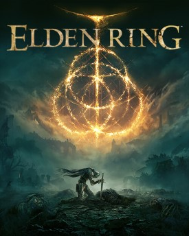
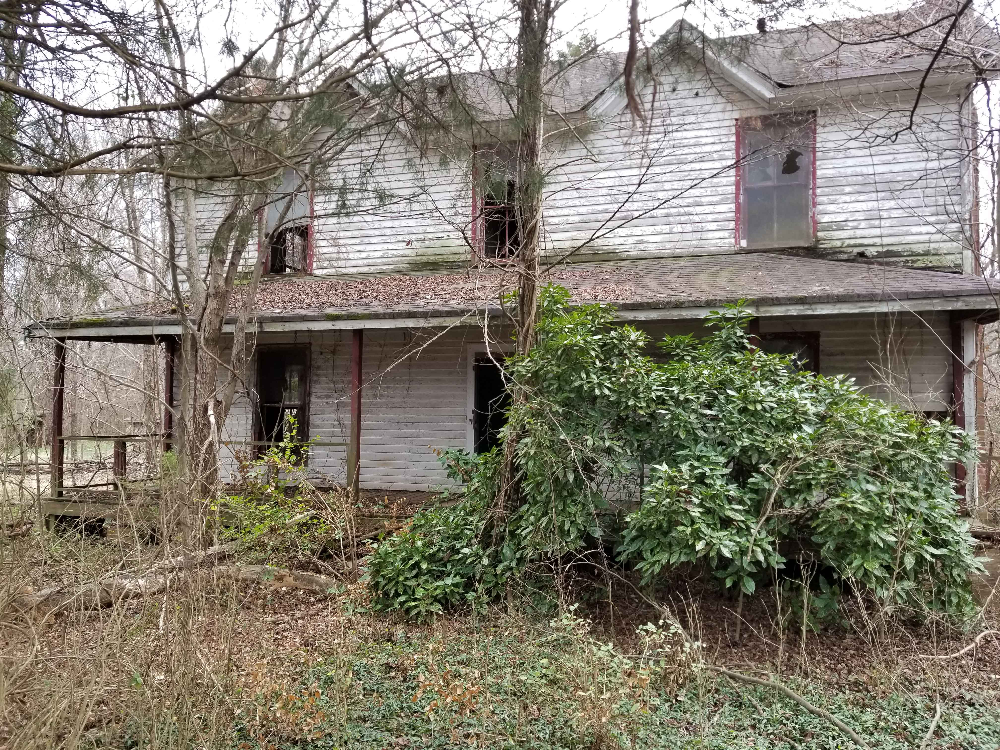

Elden Ring is Finally Here!
March 3
Last week on the 25th, Elden Ring finally released. I've been patiently waiting for this game for the last year and now I'm finally playing it. I'm quite a number of hours into it at the time of writing this and I can already say with confidence that this is going to be the game of the year. In Elden Ring, you venture through a dark fantasy world, encountering friends, foes, and even demigods. Throughout your journey you'll find new armor, armaments, and in true RPG fashion you can allocate points into different stats like vigor, endurance, and intelligence, among others. Elden Ring received "universal acclaim" according to review aggregators Metacritic and OpenCritic. I'm very excited to continue playing and see what surprises the game has in store for me to discover.
Exploring an Abandoned House
February 20
Yesterday my friends and I explored an old abandoned house in Salisbury. Outside the house there were dilapidated wooden sheds with old rusty tools and equipment. When we stepped inside the house we saw that most of the furniture was destroyed. We were worried that the stairs would collapse when we walked up them. In one of the bedrooms we found a weird doll with a missing head. The house was fairly small and didn't have much inside, but it was still a fun experience. I look forward to exploring more cool and creepy places.
My First Blog Post
February 8
Hello and welcome to my first blog post. My name is Diego and I'm a highschool student with an interest in technology. You can find more info about me on my about page. If you want to see some of my work, check out the gallery. Or, if you want to send me a message, go to the contact page. Please enjoy the rest of your time on my website.